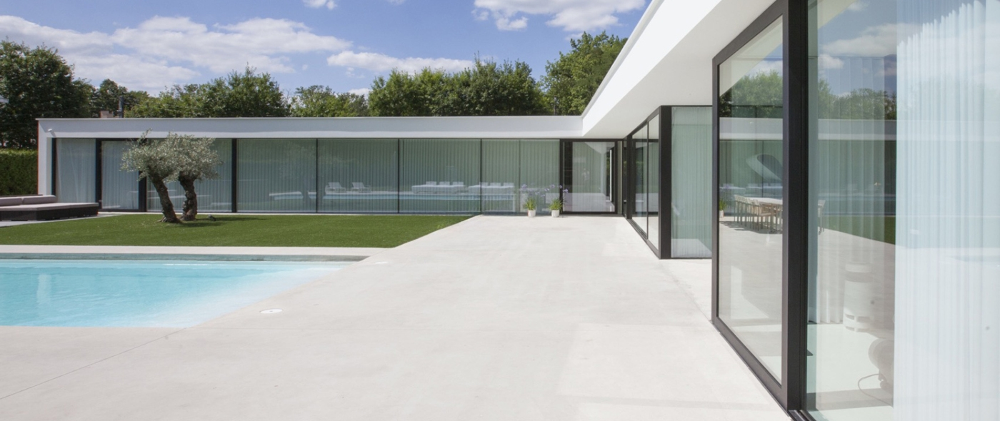
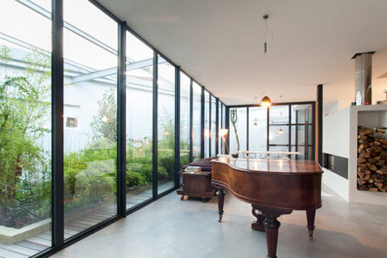
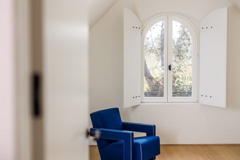

Offerte opvragen
Momenteel krijgt u bij Belisol uw glas aan €1. Of u nu kiest voor aluminium, pvc of hout. Ons glas blijft dezelfde kwaliteit aan een uitzonderlijke prijs. Zo kunt u - zoals altijd - zeker zijn van uw keuze.
Nu zeker van uw glas aan €1
Vraag een offerte
Maximale flexibiliteit voor een minimaal budget: kies uit verschillende stijlen, van steellook tot klassiek, en van landelijk tot strak. Ondanks de ruime mogelijkheden, geniet u van een optimale prijs-kwaliteit.
Elegante kwaliteit: aluminium ramen zijn slank en elegant, maar toch superstevig. Hun onwrikbare kwaliteit gaat tientallen jaren mee en maakt van aluminium hét materiaal voor de architectuur van vandaag.
Natuurlijke warmte: geen enkel materiaal kan uw huis dezelfde warme uitstraling bieden als houten ramen. Maar hout is bovendien van nature een vocht- en warmteregelaar, die zowel thermisch als akoestisch zeer goed isoleert.
De prijs van houten ramen bij Belisol wordt zorgvuldig berekend op basis van uw specifieke voorkeuren en de op maat gemaakte vereisten van uw woning. Hoewel houten ramen traditioneel gezien iets duurder kunnen zijn vanwege het vakmanschap en de natuurlijke materialen die worden gebruikt, biedt Belisol competitieve prijzen die het uitstekende vakmanschap en de duurzaamheid van onze producten reflecteren.
Houten ramen staan bekend om hun uitstekende natuurlijke isolatie-eigenschappen, zowel thermisch als akoestisch. Door de intrinsieke structuur biedt hout een hoge weerstand tegen temperatuurschommelingen, wat bijdraagt aan de energie-efficiëntie van uw huis. Bij Belisol worden houten ramen ontworpen met aandacht voor isolatie; ze houden de warmte binnen tijdens de koude maanden en isoleren tegen de hitte in de zomer.
Bij isolatie denken we sowieso aan het beschermen tegen koude in het winterseizoen of net het vermijden van opwarming in de warmere maanden. Maar ook geluidscomfort wordt steeds belangrijker in onze drukke en dichtbebouwde wereld. Meestal is het onmogelijk om de geluidsbron aan te pakken, dus kiest u best voor een bescherming tegen geluidsoverlast van binnenuit. Dat kan met goed uitgeruste raamprofielen, gecombineerd met geluidswerende beglazing.
Uw veiligheid is van het hoogste belang. Veiligheid kent meerdere niveaus; u dient zich te weren tegen inbraak, letsels, brand, maar ook tegen de weersomstandigheden. De standaard bij Belisol ligt hoog, daarom rusten wij al onze ramen uit met veiligheidsbeslag, opteren we voor de beste materialen en respecteren we uiteraard de regelgeving met betrekking tot de veiligheid van personen. Daarenboven bieden we diverse opties om uw veiligheid bijkomend te verhogen.

Isabelle Drieskens, zaakvoerder Belisol Leuven
Na 27 jaar doet Isabelle Drieskens haar job nog altijd met evenveel drive, passie en menselijkheid.
Nathalie Van Gompel, zaakvoerder Belisol Antwerpen
Op 21 september 2021 sloeg Nathalie Van Gompel een nieuwe weg in en startte ze als nieuwe zaakvoerster van Belisol Wommelgem en Brasschaat.
Volg ons via
Ramen
Deuren
Schuiframen
Onze productreeksen
My Belisol
Garantie
Keuzehulp & Tools
Tips en advies
Gratis advies
Showrooms
Over Belisol
Realisaties
Werken bij Belisol